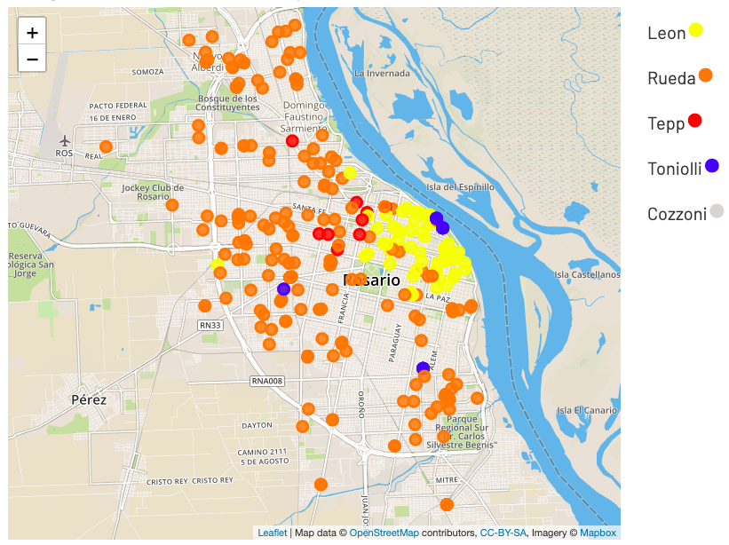
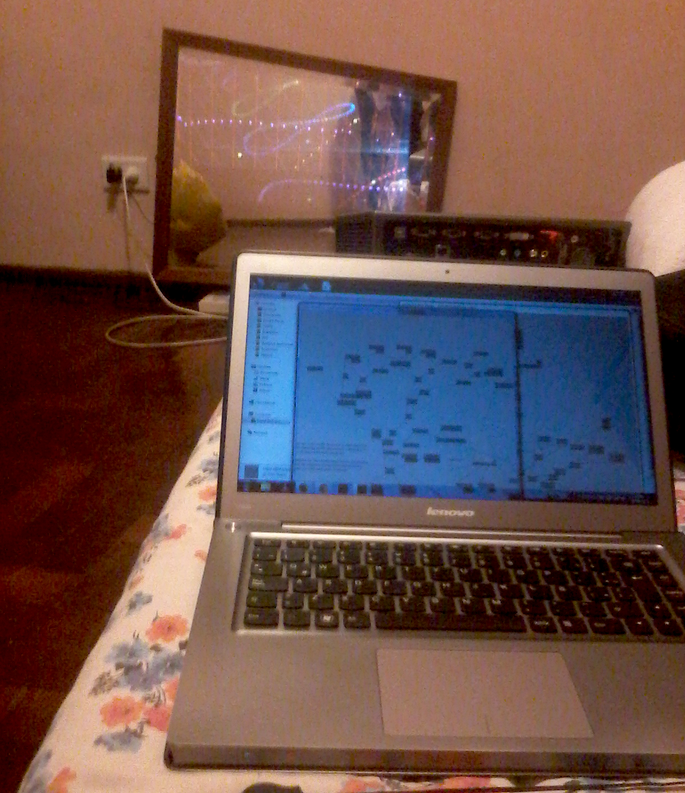
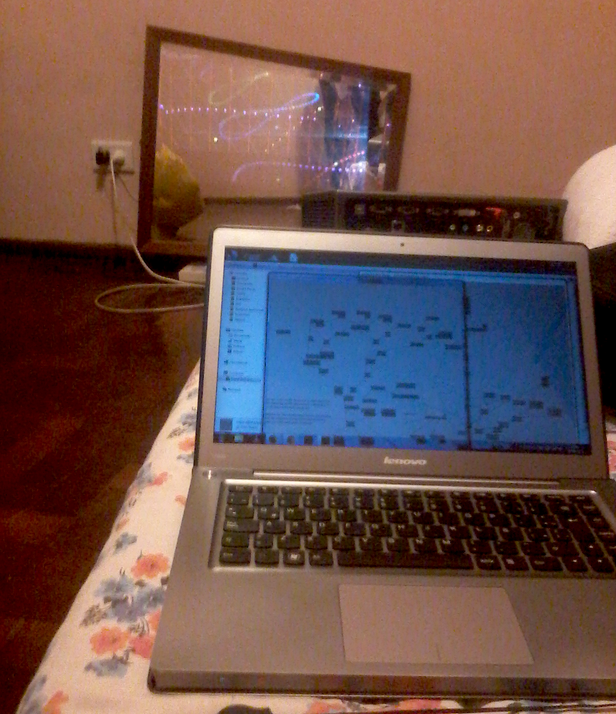

Geografía Política: Elecciones generales 2019, Rosario
Un mapa de la política en Rosario al momento de las elecciones generales de 2019.
Ir al sitio »Alejandro Panza | Rosario | Argentina
Un mapa de la política en Rosario al momento de las elecciones generales de 2019.
Ir al sitio » 

En sexto grado le conté a un amigo que me despertaba con un rayo de sol que se filtraba por la persiana y me daba justo en los ojos, todos los días. Por supuesto que era mentira. Pasó una vez y en el momento sentí la necesidad de agrandar la anécdota. El sol pasa por un camino un poco distinto cada día. A las nueve de la mañana de octubre pasa por la cama, a las nueve de la mañana de noviembre pasa por la mesa de luz.
Si la sombra de la ventana se mueve a cada hora, y pasa todos dias por un lado diferente, se puede hacer un reloj.
Que tán difícil puede ser hacer un reloj del sol? Continuar Leyendo »

¿Cansado de evitar las cuartas paralelas? probar el arreglador »

Este video fue parte de una proyección que realizamos sobre el Monumento a la Bandera junto con Orquidea Mapping
Un mapa de la política en Rosario al momento de las PASO de 2019.
Ir al sitio »Un mapa de la política en Rosario al momento de las elecciones generales de 2019. Reaizado con la colaboración de Nahuel Sciaratta.
Ir al sitio »